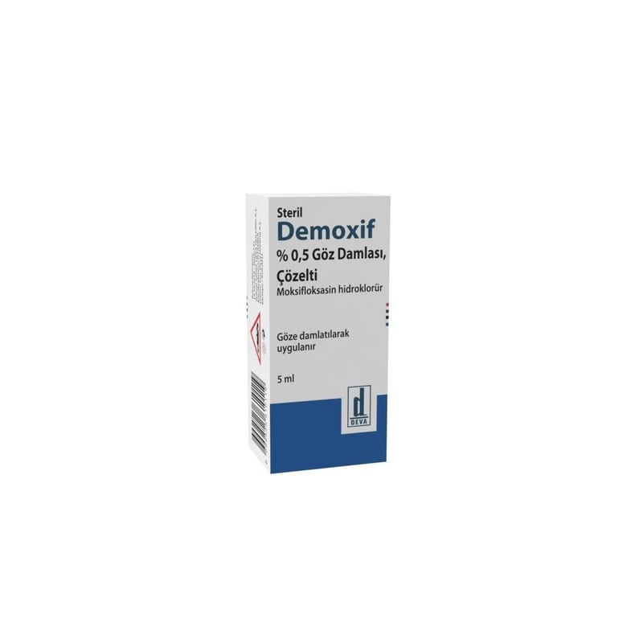

Demoxif %0,5 Göz Damlası, Çözelti, 5 ml, 1 Şişe

Ne için kullanılır
KT · Bölüm 1DEMOXİF, partikül içermeyen, berrak, yeşilimsi-sarı çözeltidir.
DEMOXİF, etkin madde olarak 5 mg moksifloksasine eşdeğer 5,45 mg moksifloksasin hidroklorür içerir. Koruyucu içermez.
Farmakoterapötik grup: Oftalmolojikler, antienfektifler
DEMOXİF, 5 ml’lik göz damlası içeren; 1 adet damlalıklı, opak, beyaz renkli, düşük yoğunluklu polietilen şişe ve vidalı, turuncu renkli kapaktan oluşan ambalajlarda sunulmaktadır.
DEMOXİF, florokinolon sınıfından bir antibiyotik olan ve göz enfeksiyonlarının tedavisinde kullanılan moksifloksasini içerir.
DEMOXİF, gözün ön oküler bölümünde moksifloksasine hassas suşların sebep olduğu bakteriyel enfeksiyonların topikal tedavisinde kullanılır.